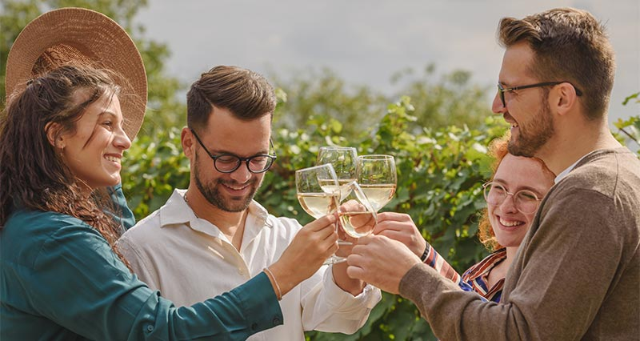

Når vin bliver en oplevelse
Smag på et udvalg af vores vine, mens vi fortæller om, hvad der gemmer sig i glasset og hvordan det hele blev til. Et sammenspil mellem vores hårde arbejde, klimaet og druen Solaris giver de bedste forudsætninger for den gode smag.
Vi deler vores egne oplevelser og små historier fra hverdagen i marken og kælderen – og vi lover, det bliver hverken højtideligt eller svært. Bare god vin, godt selskab og en stund, hvor der er plads til både grin og nysgerrighed.
Ved dette besøg kan du opleve:
- Historien om Havblink
- Smagning af vores 4 vine
- Hvorfor druen Solaris vækker begejstring i ind- og udland
Varighed:
Ca. 1/2 time
Pris:
260 kr. per person.
Kun mobilpay eller kontant betaling - Betales når i ankommer
Datoer:
- Fredag d. 6. juni - Fully Booked
- Lørdag d. 21. juni - Få pladser tilbage
- Fredag d. 27. juni - ledige
Send en mail til havblink@havblink.dk for booking - Vi bekræfter herefter din deltagelse
Anmeldelser
⭐ 4,3
"Det var første gang, jeg deltog i en professionel vinsmagning, og stemningen var både afslappet og lærerig. Værten var dygtig til at guide os gennem smagene, og Solaris-vinene overraskede mig positivt. Jeg havde ikke forventet så meget kompleksitet i en dansk vin – det blev en rigtig hyggelig eftermiddag." – Andreas, vin-nybegynder
⭐ 4,4
"Det var spændende at opleve, hvordan én drue – Solaris – kunne give så forskellige vine, alt efter hvordan den blev behandlet. Vi fik serveret både mousserende, tørre og halvsøde varianter. Det hele blev præsenteret med stor passion, og det smittede af. En både lærerig og hyggelig eftermiddag." – Emma, deltager i vinsmagning med veninderne
⭐ 4,1
"Selve vinsmagningen var hyggelig og velorganiseret, men vinene ramte ikke helt min smag. De var meget friske og syrlige – ikke dårlige, bare ikke mine favoritter. Dog spændende at høre om Solaris-druens potentiale i det danske klima, og stemningen var rigtig god."
– Torben, deltager med erfaring fra udenlandske smagninger
Vis flere anmeldelser